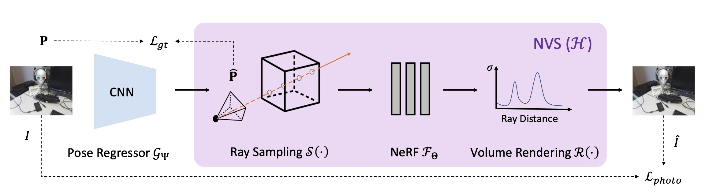

Direct-PoseNet
Absolute Pose Regression with Photometric Consistency
3DV 2021
Abstract
We present a relocalization pipeline, which combines an absolute pose regression (APR) network with a novel view synthesis based direct matching module, offering superior accuracy while maintaining low inference time. Our contribution is twofold: i) we design a direct matching module that supplies a photometric supervision signal to refine the pose regression network via differentiable rendering; ii) we show that our method can easily cope with additional unlabeled data without the need for external supervision such as traditional visual odometry or pose graph optimization. As a result, our method achieves state-of-the-art performance among all other single-image APR methods on the 7-Scenes benchmark and the LLFF dataset.
Overview Video
Architecture
Results
Citation
@article{chen21directPN,
title={Direct-{P}ose{N}et: Absolute Pose Regression with Photometric Consistency},
author={Chen, Shuai and Wang, Zirui and Prisacariu, Victor Adrian},
journal={International Conference on 3D Vision},
year={2021},
}